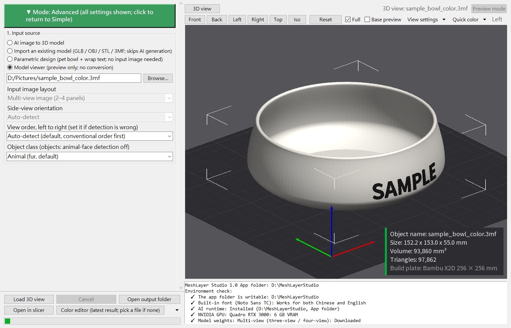
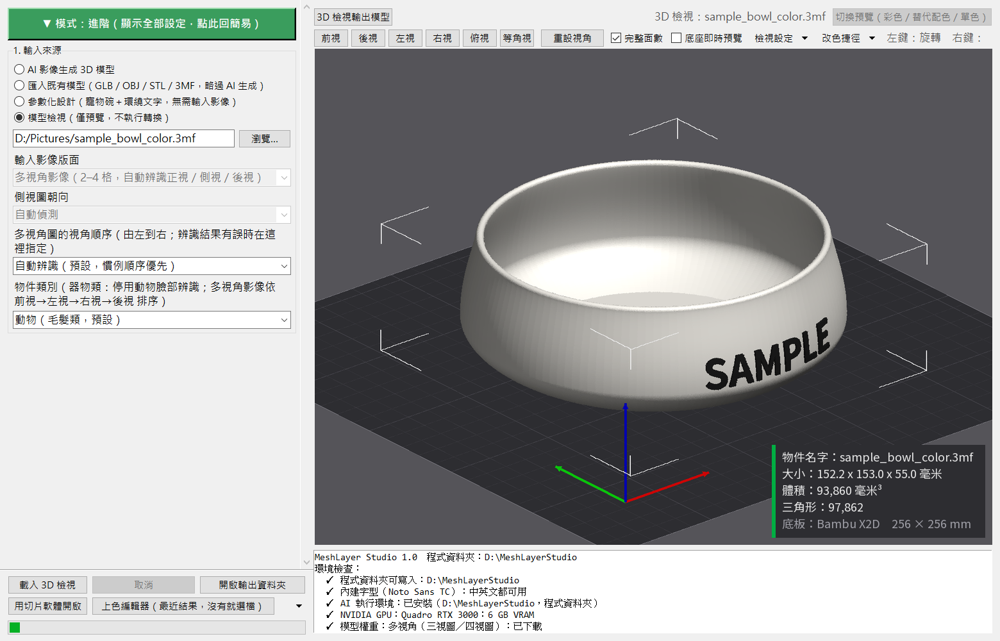
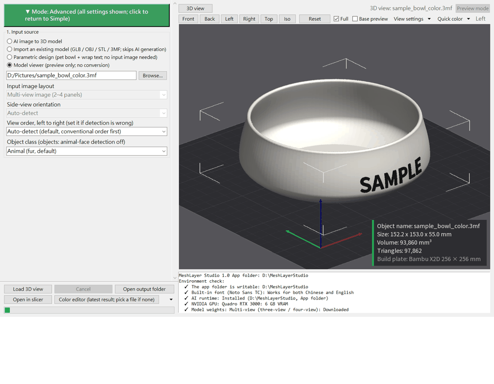
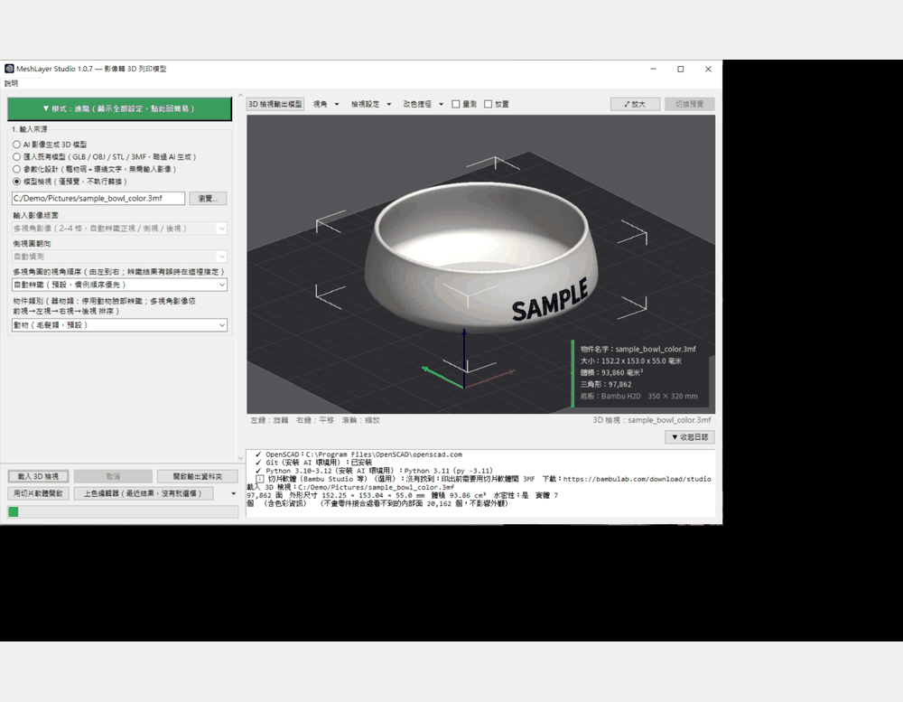

Free for Windows 10 / 11. Exports STL and multicolor 3MF for your slicer. No account, no telemetry, nothing uploaded.
Windows 10／11 免費使用。輸出給切片軟體的 STL 與多色 3MF。免註冊、無遙測、不上傳任何東西。
Download for Windows下載 Windows 版 GitHubGitHubVersion 1.0 · about 113 MB · please verify the SHA-256 on the release page.
版本 1.0 · 約 113 MB · 請核對發布頁上的 SHA-256。


Repairs holes, scales to your height, adds a base, checks watertightness and thin walls.
自動補洞、縮放到指定高度、加底座，檢查水密與過薄區域。
Image-to-3D runs on your own NVIDIA GPU. Installed separately, about 8–10 GB.
圖片轉 3D 在你自己的 NVIDIA 顯卡上執行，另外安裝，約 8–10 GB。
Map colors to the filaments you own (up to 24 AMS slots) and edit them in a built-in 3D editor.
依你擁有的線材配色（最多 24 個 AMS 槽位），內建 3D 編輯器逐區改色。
Pet bowls, name plates, wrapped text, SVG patterns and logos, Gridfinity bins.
寵物碗、名牌、環繞文字、SVG 圖樣與標誌、Gridfinity 收納盒。


MeshLayerStudio_1.0_win64.zip from the release page.Get-FileHash .\MeshLayerStudio_1.0_win64.zip -Algorithm SHA256
MeshLayerStudio.exe and _internal together — and run the exe.MeshLayerStudio_1.0_win64.zip。Get-FileHash .\MeshLayerStudio_1.0_win64.zip -Algorithm SHA256
MeshLayerStudio.exe 與 _internal 要放在一起）後執行。Images, models and settings stay on your computer. The app connects to the internet only when you use a feature that needs it (for example installing the AI runtime). See the Privacy Policy and Terms of Use.
This web page loads Ko-fi's optional "Support me" widget from ko-fi.com, so your browser contacts Ko-fi when the page opens. Ko-fi's own privacy policy applies to that. The app itself does not use it.
圖片、模型與設定都留在你的電腦。只有你使用需要連網的功能（例如安裝 AI 環境）時才會連線。詳見隱私權政策與使用條款。
本網頁會從 ko-fi.com 載入選用的「Support me」贊助小工具，因此開啟網頁時你的瀏覽器會連線到 Ko-fi，適用 Ko-fi 自己的隱私權政策。程式本身不使用它。